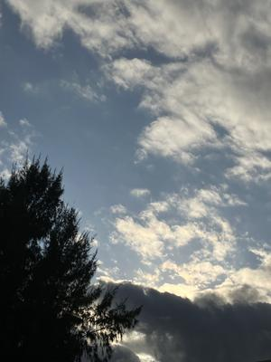
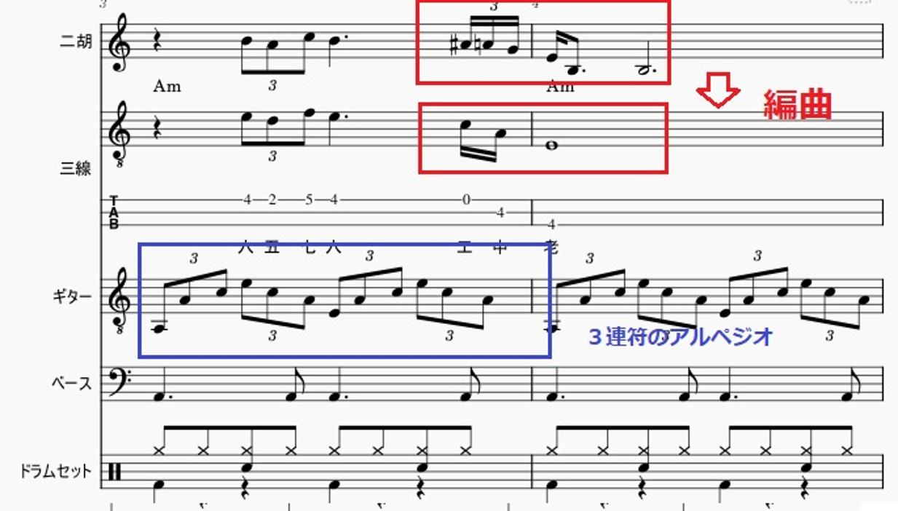
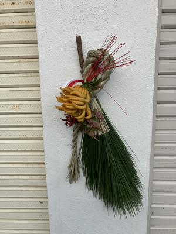

うるがいの話 ある日
最新: ハモリを試す【うるがいの話 ある日】とは 一日だけのプログです
『うるがいの話』の最新一日だけのプログで、通信料が少なく経済的だ。カニの画像をクリックすると全ての日付が載る『うるがいの話』サイトを表示します
|
|
【うるがいの話】 うるがい(ｳﾙｶﾞｲ urugai)とは、『もずくがに』の名前でとても大きくなります。 |
|---|---|
|
|
【カミマヤーの話】 猫のことを方言でマヤーといいます。カミマヤー（kamimayaa）とは、神の猫のことです。 |
|
【たながぁの音楽】 たながぁ（ﾀﾅｶﾞｰ tanagaa）とは手長えびのことで、何種類かあり大きいのは車 エビぐらいになります。 |

|
【ぶながぁの話】 ぶながぁ(ﾌﾞﾅｶﾞｰ bunagaa)とは、赤い髪の毛、赤い身体、そして身長は１ｍ２０ｃｍ ぐらい、川の蟹を食べているの目撃された。場所は沖縄県国頭郡大宜味村のと ある村僕の隣近所に住んでいる爺さんから、聞いた話です。 |
|
|
【ギーマの話】 ギーマ(giima)とは、山原の里山に咲くスズランに似た、 花を付けます。実は食べられます、 気が付くと口の周りが紫になっています。 |
2025年12月28日 (日）ハモリを試す
16:09

『北の宿から』は１１月２６日に楽譜データ作成に着手したもの
の、クリスマスの曲等の洋楽を優先させたため、再開に時間がか
かった。以外と、苦労したのである。下に、完成までの手順を列
挙する。
1.楽譜
楽譜は、#が一つのト長調(Gメジャー),
歌はシから（１オクターブ下の）
2.三線に合わせて移調する(上に完全４度）
変化記号がないハ長調(Cメジャー)へ、歌はミから
3.その他の楽器を追加
ギターは３連符のアルペジオ（初めての経験）
4.編曲
三線に合うよう音符を編集する
3小節末から4小節（8分音符の３連符は三線では無理

5.ハモリを試す（始めての経験）
二胡の音色を利用、歌の箇所を５度上に移調することでハモリ
を入れた

完成したのは
北の宿から 三線(sanshin) ３分４４秒
https://youtu.be/WHxOLIo3eSg
次に、さらに中断していた洋楽も完成させた。プログの過去の書
き込み一回目の先頭の日に載せた曲である。
更新日：２０１６年９月４日
昭和５４年のＡＦＮ米軍放送のヒット曲
CHEAP TRICK I Want You To Want Me
１９７９年（Ｓ５４）にヒットしたこの曲は、田舎のラジオ（Ａ
ＭのＡＦＮ米軍放送網）で夜中、毎日のように眠りながら聞いて
いいたとき、とてもノリのいいライブのロックの歌がある。これ
までずうと気がかりになっていたが、ＲＢＣのみのだかずおの番
組で、リスクエストがあったのでいろいろ調べてたどりついた。
着手はなんと今年の７月２０日だった、ただ、歌詞の楽譜がネッ
ト上に無くて中断していたが、１１月５日に大半の歌詞にぼかし
が入った参考になる楽譜をたまたま見つけだし、再開したものの
中断して、昨日『北の宿から』を終えてから再開、今日完了！す
る。長かった！！
CHEAP TRICK(チープ・トリック) / I WANT YOU TO WANT ME (甘い罠)
三線(sanshin) 工工四(pdf) ３分２２秒
https://youtu.be/_Cdwzz7WT7A
きのう、ウォーキングすると、結構しめ縄を見かけた。

うちも今日、玄関を水で掃除したあと、しめ縄をする。